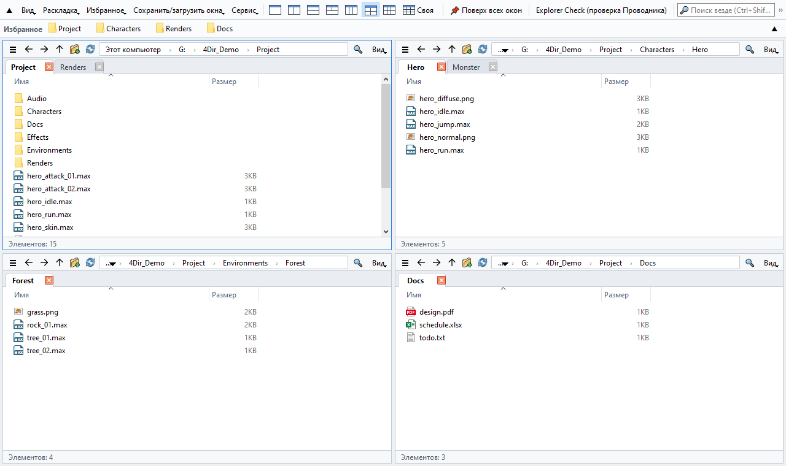
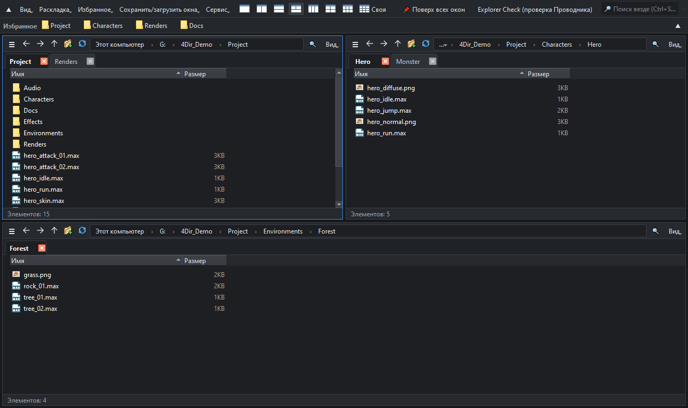

До 20 панелей. Вкладки в каждой панели. Не нагружает ПК.
Бесплатный файловый менеджер для Windows 10/11. Без установки — распакуйте и запустите.
Windows 10/11 64-бит · 33 MB · 2026-10-21 · бесплатно

Возможности
До 20 панелей
Раскладки на 1, 2, 3, 4 или 6 панелей одним щелчком или любая сетка до 5 × 4. У каждой панели свои вкладки.
Не мешает работе
Папки читаются напрямую, без тяжёлого представления оболочки Windows. В простое нет таймеров и опросов — можно держать открытым рядом с 3ds Max, играми и другими тяжёлыми программами.
Мгновенный поиск
Начните печатать — поиск по всем именам файлов на дисках. Собственный индекс обновляется в реальном времени, права администратора не нужны.
Статус SVN с первого взгляда
Значки «изменён / добавлен / конфликт» читаются прямо из .svn; папки краснеют, если внутри что-то изменилось. Git и Perforce — через значки-наложения Windows.
Как Проводник
Те же сочетания клавиш, полное контекстное меню Windows, перетаскивание в Проводник и другие программы и обратно.
Портативно и приватно
Настройки хранятся в папке 4Dir. Светлая/тёмная тема, 10 языков, пакетное переименование, восстановление сеанса и диагностика Проводника встроены.

Установка
- Скачайте zip кнопкой выше (или в разделе Releases на GitHub). Зелёная кнопка «Code → Download ZIP» на GitHub содержит только исходный код и не запустится.
- Щёлкните архив правой кнопкой → Свойства → отметьте Разблокировать → OK. (Иначе Windows будет каждый раз показывать предупреждение.)
- Распакуйте в любое место и дважды щёлкните 4Dir.vbs.
Если появится Windows SmartScreen: нажмите Подробнее → Выполнить в любом случае. 4Dir — новая программа и пока без цифровой подписи; исходный код открыт.
Проверка загрузки (необязательно)
В командной строке выполните certutil -hashfile 4Dir_v0.9.57.zip SHA256 — результат должен совпасть с:
4e58b8e5625e73fb55042af994b19cee92e50471dfe1a0331488719bcbb67a34
Поддержать 4Dir
4Dir бесплатен и без рекламы. Если он экономит ваше время, небольшое пожертвование поможет выпускать обновления.
Частые вопросы
Это правда бесплатно?
Да. 4Dir — бесплатная программа с открытым кодом (GPL-3.0). Без рекламы, без регистрации, без пробного периода.
Отправляет ли он данные?
Никаких личных данных. Раз в день проверяется только наличие новой версии (можно отключить в меню «Сервис»).
Что-то пошло не так?
Сервис → Сохранить журнал для отчёта о проблеме, затем создайте issue на GitHub и приложите zip-файл.